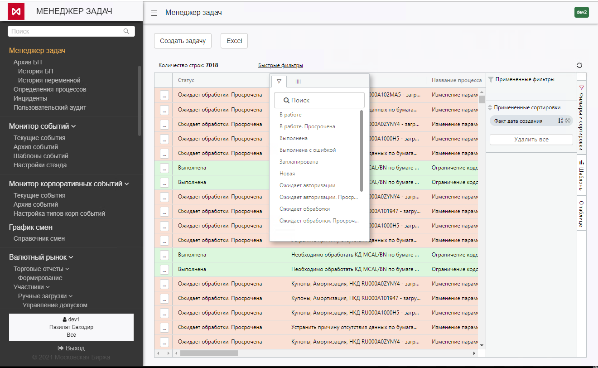
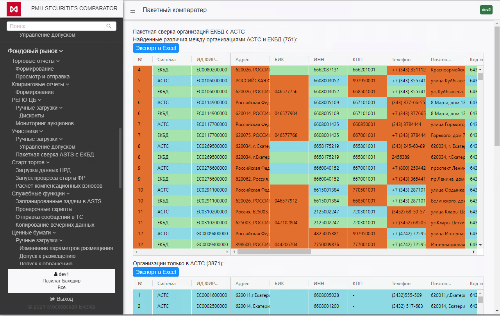
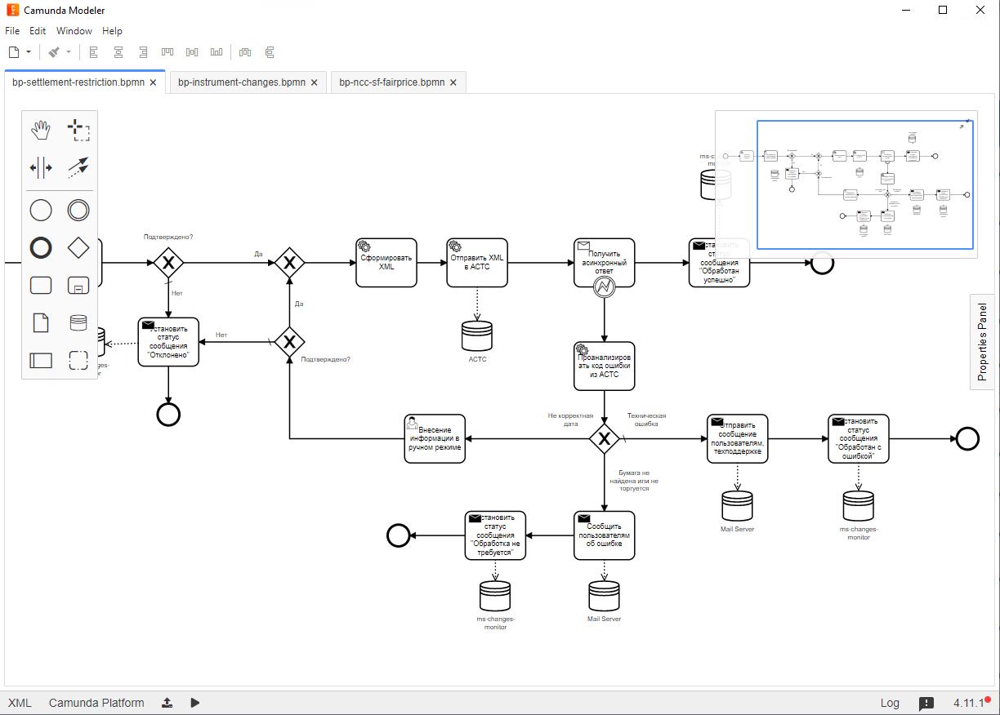
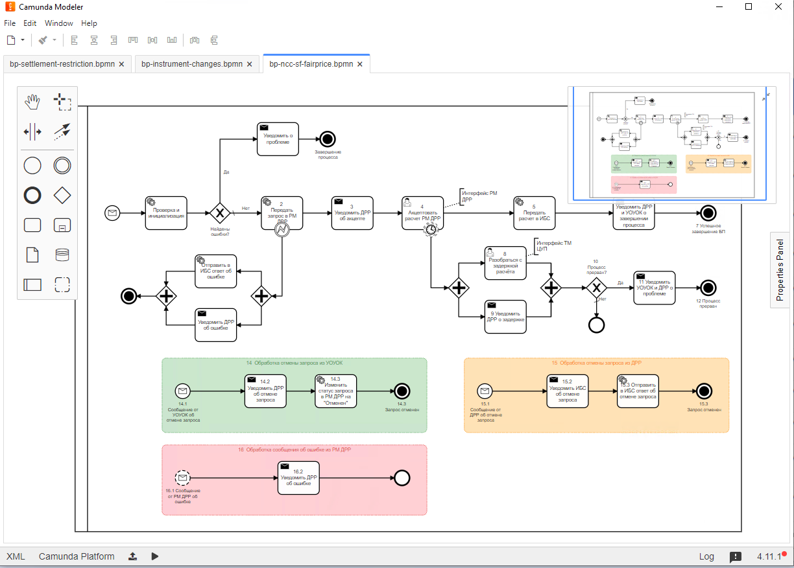
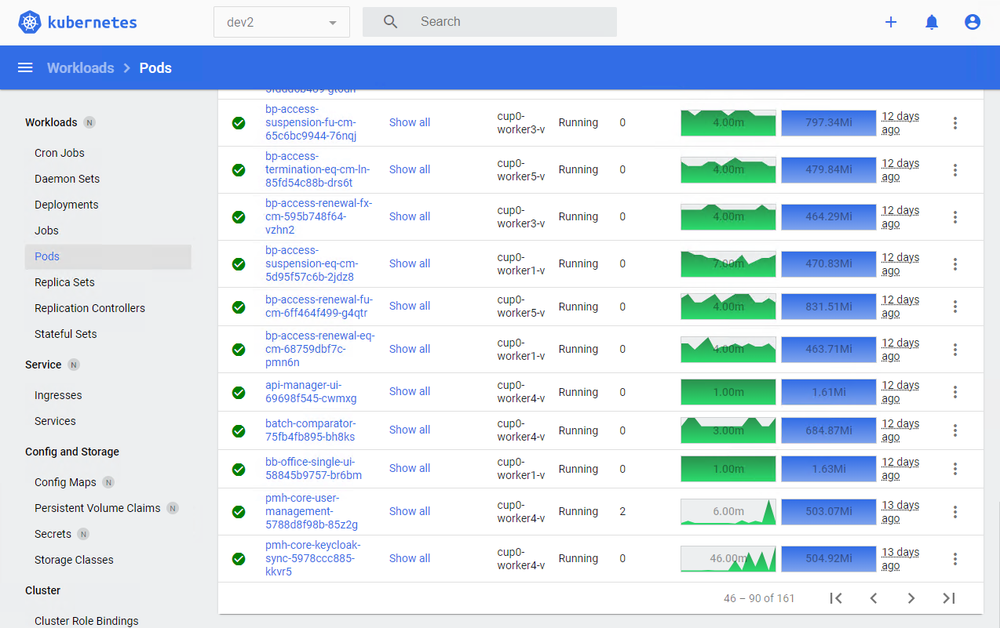

| Система управления процессами для Московской Биржи |  |
- Отказ от устаревших и неподдерживаемых производителями технологий
- Получение возможности в одном пользовательском интерфейсе выполнять задачи, связанные с несколькими рынками и различными ядрами
- Сокращение операционных рисков
- Переход к сквозным процессам
- Сокращение трудозатрат работников бэк-офиса (маклеров, клиринга, сопровождения, рисков)
- Увеличение скорости реакции на внешние и внутренние изменения
- Работа с ценными бумагами фондового рынка
- Допуск ценных бумаг до торгов (ЛКЭ-ЕКБД-ТКС)
- обращение
- размещение
- размещение с обращением
- Операционная поддержка жизненного цикла ценных бумаг
- Обслуживание расписаний выплат купонов и дивидендлов
- Обслуживание выкупов
- изменение параметров ценных бумаг
- Процессы специфичные для VIP эмитентов (ЦБ, ФК)
- Проведение аукционов ОФЗ и КОБР
- Проведение аукционов РЕПО с ЦБ
- Проведение аукционов ФК
- Проведение прочих аукционов
- Допуск ценных бумаг до торгов (ЛКЭ-ЕКБД-ТКС)
- ФР, поддержка жизненного цикла торгов
- загрузка с НРД данных перед стартом торговой сессии
- построение отчетов по результатам прошедшей торговой сессии
- Кросс-рыночная функциональность
- Работа с участниками на 3-х рынках (ФР, ВР, СР ) * (приостановка, прекращение, прекращение с ЛН, возобновление, ограниесчекние) * (торговый доступ, клиринговый доступ)
- Функциональность снятия активных заявок в ТКС
- Интеграция НКЦ-АБС c модулем риск-расчетов
- справедливые цены свопов
ЦУП - Центр Управления Процессами - не является единым приложением, состоя из микросервисов ядра ЦУП и микросервисов торговых, клиринговых и иных операционных систем. Такие микросервисы являются частью своих систем. Архитектура ЦУП допускает и предполагает множественность технологических стеков, реализующих микросервисы. Это в свою очередь делает архитектуру открытой к новым современным решениям, допуская их введение в ходе реализации. Таким образом, архитектура ЦУП – это не архитектура одного приложения, но стандарт архитектуры предприятия (Enterprise architecture) в области операционной деятельности обеспечения торгов и клиринга МБ.
Менеджер задач ЦУП
Менеджер задач ЦУП – программное обеспечение, реализующее интерактивный пользовательский интерфейс, реализованный с помощью веб-технологий и не требующий установки дополнительного ПО на рабочую станцию сотрудника.
Менеджер задач представляет сотруднику единое окно, где в порядке приоритета выстроен список задач, ожидающих выполнения. Этот список задач формируется индивидуально для каждого сотрудника и/или группы, куда он входит, и отсортирован по критичности выполнения, времени поступления и другим характеристикам. По нажатию на строку задачи пользователю дается возможность узнать нужные детали, необходимые для ее выполнения либо выполнить задачу непосредственно в открывшейся форме (целевая схема), либо сообщить о ее выполнении, в случае если это невозможно напрямую (например, задача «снять резервную копию базы данных с промышленной среды»). Менеджер задач ЦУП позволяет участникам процесса отслеживать статусы автоматически выполняемых задач. В совокупности, менеджер задач ЦУП позволяет управлять процессами в целом – выполнять и контролировать задачи, требующие ручного выполнения, отслеживать детализированные статусы автоматических задач, отслеживать прогресс экземпляра процесса в целом, инициировать отдельные экземпляры процессов.
Использование менеджера задач для процессов внутри операционного блока – обязательно.
Использование менеджера задач в процессах, затрагивающих не только операционный блок носит рекомендательный характер. В случае наличия локальных для данных бизнес-подразделений собственных систем управления задачами, допустим сценарий интеграции процесса, где задачи подразделения выполняются в собственном менеджере задач, а задачи сотрудников операционного блока - менеджере задач ЦУП. При этом явно подразумевается необходимость обеспечения прозрачной интеграции двух систем, с помощью технологий EIF.
Наличие двух и более несвязанных интеграцией менеджеров задач, участвующих в одном и том же бизнес-процессе, недопустимо с точки зрения целевой архитектуры.
Основные компоненты системы
- Business Process Service – единица деплоя, содержащая одно описание бизнес-процесса.
- Task Manager – GUI и сервис, подписанные на топик сообщений ЖЦ БП (ограниченный набор сообщений). Его основная задача отображать персональный инбокс пользователя (с общей информацией по задаче: идентификатор задачи, название, исполнитель, группа исполнителей, идентификатор процесса…) и динамически его обновлять.
- Микросервисы:
- Одновременно компоненты ЦУП (соответствуют всем архитектурным требованиям ЦУП) и компоненты систем, включенных в рамки проекта
- Каждый микросервис может разрабатываться одной целостной командой, и имеет возможность независимого развертывания: так, набор микросервисов включается в релиз ТС и тестируется вместе с ним, и одновременно включается в релиз ЦУП и тестируется вместе с ЦУП
- Взаимодействуют с ЦУП через ESB или REST и принимают участия в управляемых ЦУП бизнес процессах как прямой исполнитель конкретного этапа, но могут взаимодействовать со своей системой по проприетарным протоколам
- Service Discovery – распределённое CP-хранилище, позволяющее сервисам регистрировать себя и публиковать свою мета-информацию для других сервисов (зависимости от других сервисов, продуцируемые и потребляемые топики и т.п.)
- Брокер сообщений (JMS протокол).
- Служит исключительно для транспорта сообщений между частями системы, позволяет применять Data Flow подход, минуя непосредственный Service Discovery.
- Названия «топиков» могут и во многих случаях должны извлекаться из метаданных Service Discovery.
- Identity Provider – SSO, централизованная авторизация и аутентификация
Окно менеджера задач:

Окно пакетной сверки:

Примеры реализованных бизнес-процессов, смоделированных в Camunda Modeller:


Кластер Kubernetes cо 161 подом:
